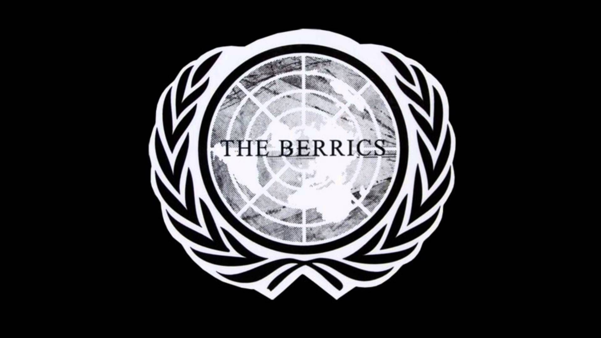
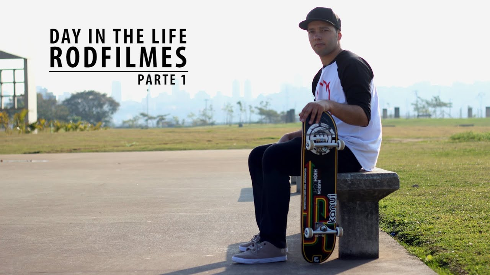
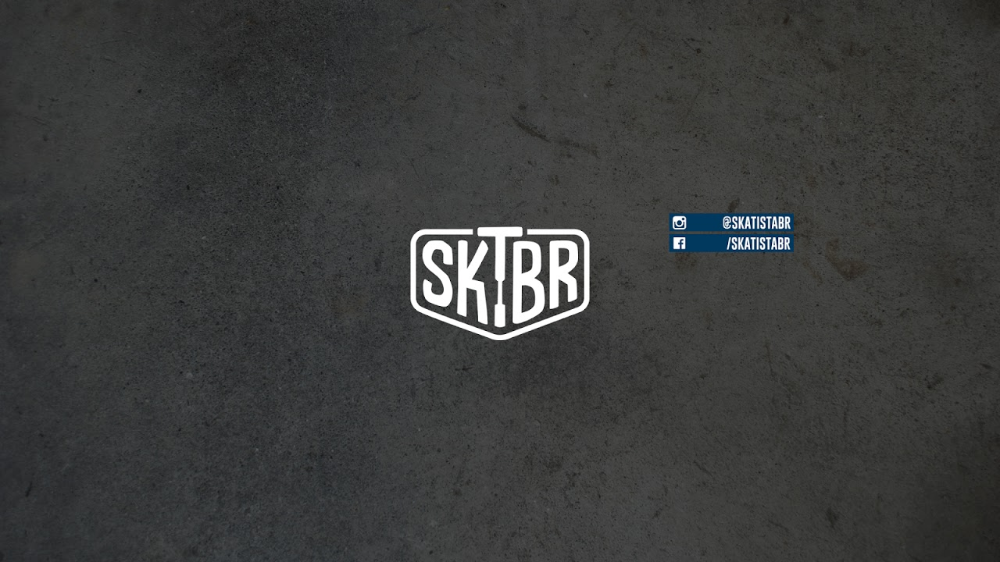
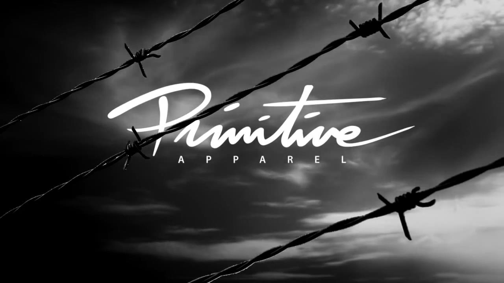

Canais para quem curte o movimento do skatebording!

The Berrics
O The Berrics e um canal que demonstra bem o skate,
aonde voçê assiste e fica impressionado,os skatistas fazem coisas
absurdas com um jeito que parece ser simples,Alem disso o berrics
é um interior privado
skatepark constituído pelos
skatistas profissionais
Steve Berra e Eric Koston.
É também produz conteúdo do site fornecendo filmado no skatepark,
bem como outros meios de skate-relacionados.
O nome da unidade é uma junção dos nomes dos proprietários
(o 'Ber' do sobrenome do Berra eo 'ric' do primeiro nome de Koston.

Canal Rodfilmes
Esse e um dos canais mais tradicionais
do skate brasileiro,Aqui você encontra uma gama de conteúdo voltado para o skate,
como videos ensiando manobras desde do basico ate o mais avançado,
videos de fingerboard(skate de dedo) entre outros.

Skatista BR
Outro canal que os brasileiros gostam muito é o
'Skatista Br' pois mesmo sendo um esporte complicado
o canal ensina de um jeito facil e acessivel para que
todos entendam,eles tem uma serie para iniciante
para aqueles que nunca subiram no skate!

Primitive Skateboarding
Além de ser uma marca excelente, a Primitive
possui um canal no youtube que posta videos do mundo de skate,
que por muitos considerados o de melhor qualidade,um investimento muito
grande da marca proporciona videos incriveis,os atletas da marca
fazem parecer facil,quando a maioria fazem o que querem em cima do board.
Seja Bem Vindo!
Esse site esta em versão beta, somente alguns usuarios podem acessar!